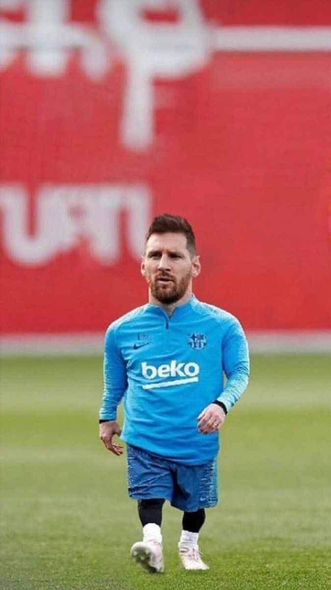

|  |
- Driblar: Puedo pasar entre 5 defensas como si estuviera en la fila del supermercado.
- Tiros Libres: Si la portería tuviera autógrafos, los míos serían los más frecuentes.
- Asistencias: Mis pases hacen que cualquiera parezca estrella (pregúntale a mis compañeros).
- Resistencia: Los defensas me pegan, pero yo sigo corriendo. Es como si tuviera un escudo invisible.
- Liderazgo: Grito poco, pero cuando hablo, hasta el árbitro me escucha.
- Idiomas: Español (nativo), catalán (heredado de La Masía) e inglés nivel “mejor que mi rival en el marcador”.
|
-
FC Barcelona (2000-2021):
- Entré como un chiquitín y me fui como el máximo goleador histórico (672 goles, por si perdías la cuenta).
- Gané TODO: 10 Ligas, 4 Champions y una pila de trofeos que no caben en esta página.
- Logros locos: 6 Balones de Oro mientras comía croissants en Barcelona.
-
Paris Saint-Germain (2021-2023):
- Descubrí que los croissants franceses también son buenos.
- Aporté goles y asistencias para ganar la Ligue 1 (aunque mi verdadero rival era el invierno en París).
-
Inter Miami CF (2023 - Presente):
- Fui a la MLS a enseñar cómo se patea bonito.
- Ya gané la Leagues Cup 2023, porque la costumbre de ganar no se pierde.
-
Selección Argentina (2004 - Presente):
- Campeón del Mundial de Qatar 2022, ¡por fin levanté la Copa del Mundo!
- También gané la Copa América 2021 (por si no era suficiente gloria).
- Soy el máximo goleador histórico de Argentina. Sí, más que Maradona, ¡y eso que no uso la mano!
|
- Nacimiento: Rosario, Argentina, 24 de junio de 1987.
- Altura: 1,70 m (pequeño, pero ¡gigante en la cancha!).
- Club actual: Inter Miami CF (sí, ahora se juega en shorts bajo el sol de Florida).
- Estado civil: Casado con Antonela Roccuzzo (mi primer fichaje exitoso).
- Superpoderes legales: Nacionalidad argentina y española, ¡por si alguna vez hay que patear en Europa o América!
|